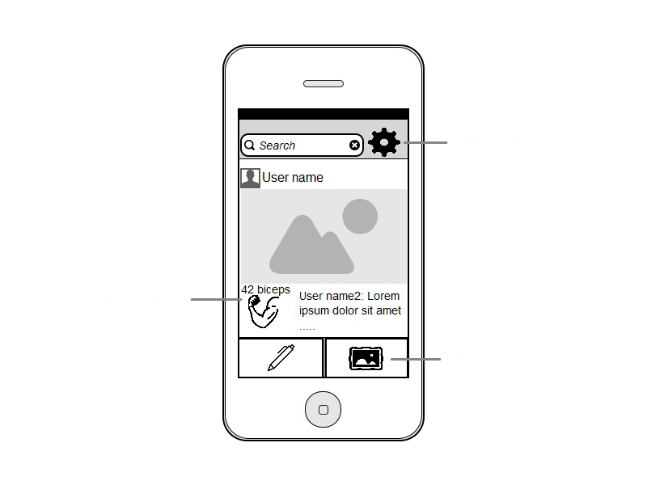

Spot [spɒt]
verb. To watch out or assist someone that is exercising
Urban Dictionary
Spot [spɒt]
verb. To follow someone in the superb SpotMe app
Team Aubergine
What is SpotMe?
Social media app
Follow the workout of others by spotting them
Share your own daily fitness routine
Learn from the people you spot
Teach the people who spot you
Persona: Jack WIlliams
“I’ve always dreamt of being like Arnold.”
Jack has a very busy lifestyle and little prior gym practice.
He can look up exercises online but learning from other fitness enthusiasts and their experience is much more trustworthy.
One of his more advanced gym going friends, Bill, advised Jack to try out SpotMe as by using it he can see Bill’s schedule, routines, as well as various photos and videos of Bill doing the exercises properly.
By spotting each other, Jack and Bill can keep up to date with one another’s progress, as well as with other people who like to work out.
Target audience
People who want to be fit and healthy
Interested in learning
Interested in teaching
Need motivation
What better way to learn than from the experience of others?
How?
Share different type of content such as photos and videos
Share workout routines and personal diet
Browse the content shared by the people you spot
Show your admiration to a post by giving it a biceps
The more biceps a post has the hotter it is
Search engine that allows you to search through type of exercise, diet, etc
Prototype

Algorithm for success:
Lots of people interested in a particular subject in one place
Target audience
Targeted ads
???
Profit $$$
Business Model (more in-depth)
Advertise products to the people who are likely to be interested in them (i.e. someone wanting to bulk up won’t see an ad about weight losing products)
Non intrusive, targeted adverts increase the chance of purchase
Business model already utilised and proved successful by lots of companies (Instagram, Facebook)